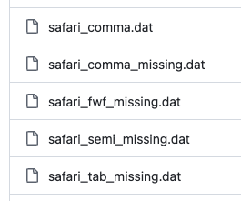
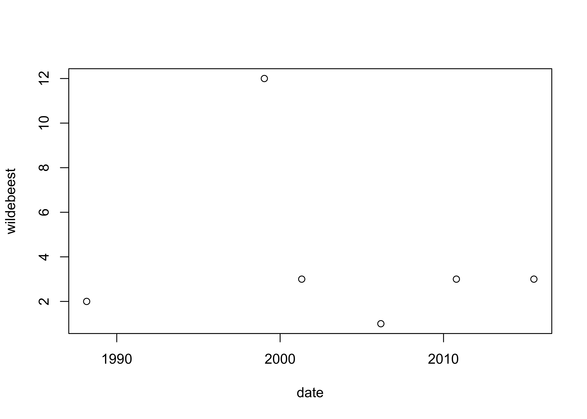

date,wildebeest,laughing hyena,crocodile,weather,start,end,fun,guide
1/13/1999,12,none,2,sunny,7:21 am,4:14 pm,yes,Joshua Tebbs
4/28/2001,3,1,1,cloudy,6:25 am,12:33 pm,Y,Edsel Peña
10/15/2010,3,0,6,rainy,8:12 am,11:34 am,no,Karl Bruce Gregory
3/02/2006,1,14,5,hot/sunny,7:15 am,3:12 pm,y,Lianming Wang
2/28/1988,2,6,3,partly cloudy,4:53 am,2:16 pm,Yes,Brian Habing
7/14/2015,3,12,0,cloudy,5:47 am,3:46 pm,No,EdwardsImporting and formatting data
$$
$$
Importing data tends to be a large part of the working statistician’s job (for good or ill). Here we’ll learn some tools for reading data sets into R when these are stored in a plain text file, sometimes with the extensions .dat,.txt, or .csv. The extension doesn’t really matter; we consider any file that can be opened by a simple text editor.
Reading data
Typically data are stored in text files where each row corresponds to a row in a spreadsheet, and the values are separated by some character, very often a comma. If not a comma, it may be a tab (long space) or other delimiter. If the values are not delimited by a special character, they may be in so-called fixed-width format, which we describe in the following.
The data sets used in this note can be downloaded from this link. Get these ones:

In order to access a data file after you have saved it on your computer, you will have to provide the path to the file. This can be a complete file path or the relative file path from the current working directory. The working directory is usually the directory (i.e. folder) from where you opened your R script, but you can change it with the setwd() command, and you can find out what it is with the getwd() command. In the following, the data files are accessed in a folder called data which is sitting in the current working directory, so each file path looks like data/<filename>.
Comma-separated
Suppose a data file looks like this:
We see that the first row appears to give column names, and that the values are separated by commas. We can read this into R with the read.table() function. We specify the options sep = "," since the values are separated by the character , and put header = T so that the first row is assumed to contain column names:
safari <- read.table(file = "data/safari_comma.dat",
sep = ",",
header = TRUE)
safari date wildebeest laughing.hyena crocodile weather start end
1 1/13/1999 12 none 2 sunny 7:21 am 4:14 pm
2 4/28/2001 3 1 1 cloudy 6:25 am 12:33 pm
3 10/15/2010 3 0 6 rainy 8:12 am 11:34 am
4 3/02/2006 1 14 5 hot/sunny 7:15 am 3:12 pm
5 2/28/1988 2 6 3 partly cloudy 4:53 am 2:16 pm
6 7/14/2015 3 12 0 cloudy 5:47 am 3:46 pm
fun guide
1 yes Joshua Tebbs
2 Y Edsel Peña
3 no Karl Bruce Gregory
4 y Lianming Wang
5 Yes Brian Habing
6 No EdwardsSometimes the data do not begin on the first row of the text file. Suppose the file looked like this:
Some make-believe safari data
Woohoo!!
date,wildebeest,laughing hyena,crocodile,weather,start,end,fun,guide
1/13/1999,12,none,2,sunny,7:21 am,4:14 pm,yes,Joshua Tebbs
4/28/2001,3,1,1,cloudy,6:25 am,12:33 pm,Y,Edsel Peña
10/15/2010,3,.,6,rainy,8:12 am,,no,Karl Bruce Gregory
3/02/2006,1,14,5,hot/sunny,7:15 am,3:12 pm,y,Lianming Wang
2/28/1988,2,6,3,partly cloudy,4:53 am,2:16 pm,Yes,Brian Habing
7/14/2015,3,12,0,cloudy,5:47 am,3:46 pm,No,EdwardsNow, in addition to the fact that the data do not begin on line 1 of the file, we see that there are a couple of missing values in this version of the data. The statistician is forever coping with missing data. Here we must specify which characters should be taken as missing values. These we specify with the option na.strings = as shown below. In order to skip the first three lines of data, we use the skip = option.
safari <- read.table(file = "data/safari_comma_missing.dat",
sep = ",",
header = TRUE,
skip = 3,
na.strings = c("","."))
safari date wildebeest laughing.hyena crocodile weather start end
1 1/13/1999 12 none 2 sunny 7:21 am 4:14 pm
2 4/28/2001 3 1 1 cloudy 6:25 am 12:33 pm
3 10/15/2010 3 <NA> 6 rainy 8:12 am <NA>
4 3/02/2006 1 14 5 hot/sunny 7:15 am 3:12 pm
5 2/28/1988 2 6 3 partly cloudy 4:53 am 2:16 pm
6 7/14/2015 3 12 0 cloudy 5:47 am 3:46 pm
fun guide
1 yes Joshua Tebbs
2 Y Edsel Peña
3 no Karl Bruce Gregory
4 y Lianming Wang
5 Yes Brian Habing
6 No EdwardsIn the special case that the data values are separated by commas and the first line contains column names, we can use the function read.csv() to achieve the same result. It is simply a “wrapper” for the read.table() function, which means that it simple executes the latter with certain options already specified, such as sep = "," and header = T. Data files with data values separated by commas often have the extension .csv.
safari <- read.csv(file = "data/safari_comma_missing.dat",
skip = 3,
na.strings = c("","."))
safari date wildebeest laughing.hyena crocodile weather start end
1 1/13/1999 12 none 2 sunny 7:21 am 4:14 pm
2 4/28/2001 3 1 1 cloudy 6:25 am 12:33 pm
3 10/15/2010 3 <NA> 6 rainy 8:12 am <NA>
4 3/02/2006 1 14 5 hot/sunny 7:15 am 3:12 pm
5 2/28/1988 2 6 3 partly cloudy 4:53 am 2:16 pm
6 7/14/2015 3 12 0 cloudy 5:47 am 3:46 pm
fun guide
1 yes Joshua Tebbs
2 Y Edsel Peña
3 no Karl Bruce Gregory
4 y Lianming Wang
5 Yes Brian Habing
6 No EdwardsOther-delimited
As we have said, sometimes the data values are not delimited by a comma. For example, we might have a data file like this:
Some make-believe safari data
Woohoo!!
date;wildebeest;laughing hyena;crocodile;weather;start;end;fun;guide
1/13/1999;12;none;2;sunny;7:21 am;4:14 pm;yes;Joshua Tebbs
4/28/2001;3;1;1;cloudy;6:25 am;12:33 pm;Y;Edsel Peña
10/15/2010;3;.;6;rainy;8:12 am;;no;Karl Bruce Gregory
3/02/2006;1;14;5;hot/sunny;7:15 am;3:12 pm;y;Lianming Wang
2/28/1988;2;6;3;partly cloudy;4:53 am;2:16 pm;Yes;Brian Habing
7/14/2015;3;12;0;cloudy;5:47 am;3:46 pm;No;EdwardsTo read this in, we have only to specify the delimiter with sep = ";":
safari <- read.table(file = "data/safari_semi_missing.dat",
sep = ";",
header = TRUE,
skip = 3,
na.strings = c("","."))
safari date wildebeest laughing.hyena crocodile weather start end
1 1/13/1999 12 none 2 sunny 7:21 am 4:14 pm
2 4/28/2001 3 1 1 cloudy 6:25 am 12:33 pm
3 10/15/2010 3 <NA> 6 rainy 8:12 am <NA>
4 3/02/2006 1 14 5 hot/sunny 7:15 am 3:12 pm
5 2/28/1988 2 6 3 partly cloudy 4:53 am 2:16 pm
6 7/14/2015 3 12 0 cloudy 5:47 am 3:46 pm
fun guide
1 yes Joshua Tebbs
2 Y Edsel Peña
3 no Karl Bruce Gregory
4 y Lianming Wang
5 Yes Brian Habing
6 No EdwardsData are often tab delimited, looking like this:
Some make-believe safari data
Woohoo!!
date wildebeest laughing hyena crocodile weather start end fun guide
1/13/1999 12 none 2 sunny 7:21 am 4:14 pm yes Joshua Tebbs
4/28/2001 3 1 1 cloudy 6:25 am 12:33 pm Y Edsel Peña
10/15/2010 3 . 6 rainy 8:12 am no Karl Bruce Gregory
3/02/2006 1 14 5 hot/sunny 7:15 am 3:12 pm y Lianming Wang
2/28/1988 2 6 3 partly cloudy 4:53 am 2:16 pm Yes Brian Habing
7/14/2015 3 12 0 cloudy 5:47 am 3:46 pm No EdwardsTo specify the tab as the delimiting character, one must put sep = "\t":
safari <- read.table(file = "data/safari_tab_missing.dat",
sep = "\t",
header = TRUE,
skip = 3,
na.strings = c("","."))
safari date wildebeest laughing.hyena crocodile weather start end
1 1/13/1999 12 none 2 sunny 7:21 am 4:14 pm
2 4/28/2001 3 1 1 cloudy 6:25 am 12:33 pm
3 10/15/2010 3 <NA> 6 rainy 8:12 am <NA>
4 3/02/2006 1 14 5 hot/sunny 7:15 am 3:12 pm
5 2/28/1988 2 6 3 partly cloudy 4:53 am 2:16 pm
6 7/14/2015 3 12 0 cloudy 5:47 am 3:46 pm
fun guide
1 yes Joshua Tebbs
2 Y Edsel Peña
3 no Karl Bruce Gregory
4 y Lianming Wang
5 Yes Brian Habing
6 No EdwardsFixed-width
Sometimes the data values are not separated by any special delimiting character, but rather arranged in a format such that the values belonging to a column are always place in the same columns of text characters. This is called a fixed-width format. Here is an example:
writeLines(readLines(con = "data/safari_fwf_missing.dat"))Some make-believe safari data
Woohoo!!
date,wildebeest,laughing hyena,crocodile,weather,start,end,fun,guide
1/13/1999 12 none 2 sunny 7:21 am 4:14 pm yes Joshua Tebbs
4/28/2001 3 1 1 cloudy 6:25 am 12:33 pm Y Edsel Peña
10/15/2010 3 6 rainy 8:12 am no Karl Bruce Gregory
3/02/2006 1 14 5 hot/sunny 7:15 am 3:12 pm y Lianming Wang
2/28/1988 2 6 3 partly cloudy 4:53 am 2:16 pm Yes Brian Habing
7/14/2015 3 12 0 cloudy 5:47 am 3:46 pm No EdwardsWe can use the read.fwf() function to read this file. We must specify how many characters are alloted to each column using the widths = option. Also important is the strip.white=T option, which will remove from character strings the extra spaces that are read in when reading fixed-width data:
safari <- read.fwf(file = "data/safari_fwf_missing.dat",
widths = c(11,3,5,3,14,9,9,4,18),
header = T,
skip = 3,
na.strings = c("","."),
strip.white = T,
sep =",")
safari date wildebeest laughing.hyena crocodile weather start end
1 1/13/1999 12 none 2 sunny 7:21 am 4:14 pm
2 4/28/2001 3 1 1 cloudy 6:25 am 12:33 pm
3 10/15/2010 3 6 NA rainy 8:12 am <NA>
4 3/02/2006 1 14 5 hot/sunny 7:15 am 3:12 pm
5 2/28/1988 2 6 3 partly cloudy 4:53 am 2:16 pm
6 7/14/2015 3 12 0 cloudy 5:47 am 3:46 pm
fun guide
1 yes Joshua Tebbs
2 Y Edsel Peña
3 no Karl Bruce Gregory
4 y Lianming Wang
5 Yes Brian Habing
6 No EdwardsFormatting data
Reading the data into R is only the first step in preparing the data for analysis. The statistician must check that numbers are treated as numbers, character strings as character strings, and may wish also to check ensure that dates and times are interpreted as such, rather than as arbitrary character strings.
Column classes
A good way to see the types, or more properly the classes assigned to the columns is to apply with sapply() the class() function to the data frame:
sapply(safari,class) date wildebeest laughing.hyena crocodile weather
"character" "integer" "character" "integer" "character"
start end fun guide
"character" "character" "character" "character" The reason laughing.hyena is read in as character column is that it has the value "none" on one line. Let’s overwrite "none" with 0, noting that when we do this, our 0 will be coerced to the character string "0", since the column is a character column; however, we can fix this by changing the class of this column to integer, as below:
safari$laughing.hyena[safari$laughing.hyena=="none"] <- 0
class(safari$laughing.hyena) <- "integer"
sapply(safari,class) date wildebeest laughing.hyena crocodile weather
"character" "integer" "integer" "integer" "character"
start end fun guide
"character" "character" "character" "character" The remaining columns appear to have been read in as expected. We may wish, however, that the years in the data column be recognized as such, whereas currently they are merely strings of characters which have no meaning to the software.
If we want to change the names of the columns, we can use the colnames() function. Below we change the name of the laughing hyena column:
colnames(safari)[1] "date" "wildebeest" "laughing.hyena" "crocodile"
[5] "weather" "start" "end" "fun"
[9] "guide" colnames(safari)[3] <- "hyena"
safari date wildebeest hyena crocodile weather start end fun
1 1/13/1999 12 0 2 sunny 7:21 am 4:14 pm yes
2 4/28/2001 3 1 1 cloudy 6:25 am 12:33 pm Y
3 10/15/2010 3 6 NA rainy 8:12 am <NA> no
4 3/02/2006 1 14 5 hot/sunny 7:15 am 3:12 pm y
5 2/28/1988 2 6 3 partly cloudy 4:53 am 2:16 pm Yes
6 7/14/2015 3 12 0 cloudy 5:47 am 3:46 pm No
guide
1 Joshua Tebbs
2 Edsel Peña
3 Karl Bruce Gregory
4 Lianming Wang
5 Brian Habing
6 EdwardsText processing
It is helpful to know a few tricks for dealing with text data. Here we will introduce a few functions that should come in handy.
Suppose we want to standardize the responses in the fun column of the safari data. One way to do this is to make a character vector containing all the strings we should interpret as “yes”; then we can use the operator %in% to check, for each entry of the fun column of the safari data, if its value is one of the values in our vector. Thus:
yes <- c("y","yes","Y","Yes")
safari$fun <- safari$fun %in% yes
safari date wildebeest hyena crocodile weather start end fun
1 1/13/1999 12 0 2 sunny 7:21 am 4:14 pm TRUE
2 4/28/2001 3 1 1 cloudy 6:25 am 12:33 pm TRUE
3 10/15/2010 3 6 NA rainy 8:12 am <NA> FALSE
4 3/02/2006 1 14 5 hot/sunny 7:15 am 3:12 pm TRUE
5 2/28/1988 2 6 3 partly cloudy 4:53 am 2:16 pm TRUE
6 7/14/2015 3 12 0 cloudy 5:47 am 3:46 pm FALSE
guide
1 Joshua Tebbs
2 Edsel Peña
3 Karl Bruce Gregory
4 Lianming Wang
5 Brian Habing
6 EdwardsNow the fun column is has logical values.
The substr() function extracts a substring from a character string:
substr("howdy", start = 2, stop = 3)[1] "ow"substr("howdy", start = 5, stop = 5)[1] "y"The regexpr() function returns the location in a character strong of the first match to a given pattern.
regexpr("ow","howdy") # look for pattern "ow" in string "howdy"[1] 2
attr(,"match.length")
[1] 2
attr(,"index.type")
[1] "chars"
attr(,"useBytes")
[1] TRUEregexpr("o","howdy-do") [1] 2
attr(,"match.length")
[1] 1
attr(,"index.type")
[1] "chars"
attr(,"useBytes")
[1] TRUEThe gregexr() returns not just the position of the first match, but of every match:
gregexpr("o","howdy-do")[[1]]
[1] 2 8
attr(,"match.length")
[1] 1 1
attr(,"index.type")
[1] "chars"
attr(,"useBytes")
[1] TRUEThe gregexpr() function and other functions like it (run ?gregexpr() to see other similar functions) allow the use of regular expressions to set patterns for which to look for matches. These have a standard syntax across many software programs and operating systems (so they are useful not just for R). More can be found on regular expressions here. Below we use a regular expression to retrieve the positions of “o” when this is followed by any lower case letter:
gregexpr("o[a-z]","howdy-do to you") # returns the position of "o" only when it is followed by a space[[1]]
[1] 2 14
attr(,"match.length")
[1] 2 2
attr(,"index.type")
[1] "chars"
attr(,"useBytes")
[1] TRUEThe function sprintf() is used to print numbers as character strings in very specific formats:
e <- exp(1)
sprintf(e,fmt = "%f")[1] "2.718282"sprintf(e,fmt = "%.2f")[1] "2.72"sprintf(e,fmt = "%05.2f")[1] "02.72"sprintf(e,fmt = "%E")[1] "2.718282E+00"Print integer values with leading zeros:
sprintf(1,fmt = "%02d")[1] "01"sprintf(7,fmt = "%03d")[1] "007"Another very useful function is the grep() function which looks for a pattern in the entries of a character vector and returns in the indices in which the pattern was found. Below, we make a new logical column in the safari data set called “overcast” which will be TRUE except when the pattern "sunny" appears in the string describing the weather.
safari$overcast <- TRUE # set all equal to true
sunny_days <- grep("sunny",safari$weather) # find which days are sunny
safari$overcast[sunny_days] <- FALSE # make false the sunny days
safari date wildebeest hyena crocodile weather start end fun
1 1/13/1999 12 0 2 sunny 7:21 am 4:14 pm TRUE
2 4/28/2001 3 1 1 cloudy 6:25 am 12:33 pm TRUE
3 10/15/2010 3 6 NA rainy 8:12 am <NA> FALSE
4 3/02/2006 1 14 5 hot/sunny 7:15 am 3:12 pm TRUE
5 2/28/1988 2 6 3 partly cloudy 4:53 am 2:16 pm TRUE
6 7/14/2015 3 12 0 cloudy 5:47 am 3:46 pm FALSE
guide overcast
1 Joshua Tebbs FALSE
2 Edsel Peña TRUE
3 Karl Bruce Gregory TRUE
4 Lianming Wang FALSE
5 Brian Habing TRUE
6 Edwards TRUEAs another exercise, suppose we wish to replace the names in the guide column with the first initial, followed by a period, and then the last name after a space, where we do not change the name if only the last name is given. The code below makes a function to convert each name to this shortened version and applies the function to the guide column of the safari data set. The strsplit() function comes in very handy here.
It works like this:
ch <- "Howdy ho!"
strsplit(ch," ")[[1]]
[1] "Howdy" "ho!" strsplit(ch," ")[[1]][1] "Howdy" "ho!" So now we use it to make a function to abbreviate the names:
nameabb <- function(ch){
full <- strsplit(ch," ")[[1]] # get first element of the list
n <- length(full)
if(n == 1){
abb <- full
} else {
abb <- paste(substr(full[1],1,1),". ",full[n],sep="")
}
return(abb)
}
safari$guide <- sapply(safari$guide,nameabb)
safari date wildebeest hyena crocodile weather start end fun
1 1/13/1999 12 0 2 sunny 7:21 am 4:14 pm TRUE
2 4/28/2001 3 1 1 cloudy 6:25 am 12:33 pm TRUE
3 10/15/2010 3 6 NA rainy 8:12 am <NA> FALSE
4 3/02/2006 1 14 5 hot/sunny 7:15 am 3:12 pm TRUE
5 2/28/1988 2 6 3 partly cloudy 4:53 am 2:16 pm TRUE
6 7/14/2015 3 12 0 cloudy 5:47 am 3:46 pm FALSE
guide overcast
1 J. Tebbs FALSE
2 E. Peña TRUE
3 K. Gregory TRUE
4 L. Wang FALSE
5 B. Habing TRUE
6 Edwards TRUESome other useful function are the toupper() and tolower() functions, which convert lower case to capital letters and vice versa, respectively:
ch <- "johann sebastian bach"
toupper(ch)[1] "JOHANN SEBASTIAN BACH"ch <- "Die Jugend ist Allem fähig."
tolower(ch)[1] "die jugend ist allem fähig."Dates
The first column of the safari data set contains dates, but they have been read in as character strings. We would like R to recognize them as dates. To convert character strings to dates we can use the as.Date() function. By default the function assumes the format yyyy-mm-dd, but other formats can be specified:
as.Date("2014-07-05")[1] "2014-07-05"as.Date("7/5/2014") # will not be recognized correctly. Must specify a format![1] "0007-05-20"as.Date("7/5/2014", format = "%m/%d/%Y")[1] "2014-07-05"as.Date("July 7, 2014", format = "%B %d, %Y")[1] "2014-07-07"Run ?as.Date to read more about date formats.
A date object stores the date as the number of days which have passed since January 1st, 1970. Dates earlier than this are stored as negative values:
as.Date(0)[1] "1970-01-01"as.Date(1)[1] "1970-01-02"as.Date(-1)[1] "1969-12-31"There are several cool ways to play with dates in R:
today <- Sys.Date() # today's date
today[1] "2025-10-06"today - 30 # the date 30 days ago[1] "2025-09-06"seq(today,by="3 days",length = 12) # make a sequence of dates [1] "2025-10-06" "2025-10-09" "2025-10-12" "2025-10-15" "2025-10-18"
[6] "2025-10-21" "2025-10-24" "2025-10-27" "2025-10-30" "2025-11-02"
[11] "2025-11-05" "2025-11-08"weekdays(as.Date(c("2014-07-05","2017-07-05")))[1] "Saturday" "Wednesday"months(today) # extract the month from a date[1] "October"We can print a date in a different formats other than the default with the format() function:
format(today,"%m/%d/%y")[1] "10/06/25"format(today,"%b %d, %Y")[1] "Oct 06, 2025"format(today,"%B %d, %Y")[1] "October 06, 2025"In the date column of the safari data set, the dates are recorded in many different formats. It takes a little bit of work to standardize the formats: Below, we use a loop to go through the entries of the date column to extract the date from each one with the as.Date() function. We have to list all the different formats to try by using the tryFormats option. Then we re-print the date in the format we want to keep. After the loop is done, we use as.Date() again to convert the entire vector of character strings into a column having the date class.
To convert the character strings in the data column of the safari data set, which represent dates to our eyes but which are not yet interpreted as dates by our software, we can use the as.Date() function, specifying the format in which they are written, to convert the character strings to actual date values. The code below overwrites the date colums with these true dates, and as a bonus, add to the data set a weekday column:
safari$date <- as.Date(safari$date, "%m/%d/%Y")
safari$day <- weekdays(safari$date)
safari date wildebeest hyena crocodile weather start end fun
1 1999-01-13 12 0 2 sunny 7:21 am 4:14 pm TRUE
2 2001-04-28 3 1 1 cloudy 6:25 am 12:33 pm TRUE
3 2010-10-15 3 6 NA rainy 8:12 am <NA> FALSE
4 2006-03-02 1 14 5 hot/sunny 7:15 am 3:12 pm TRUE
5 1988-02-28 2 6 3 partly cloudy 4:53 am 2:16 pm TRUE
6 2015-07-14 3 12 0 cloudy 5:47 am 3:46 pm FALSE
guide overcast day
1 J. Tebbs FALSE Wednesday
2 E. Peña TRUE Saturday
3 K. Gregory TRUE Friday
4 L. Wang FALSE Thursday
5 B. Habing TRUE Sunday
6 Edwards TRUE TuesdayNow we see that the first column has the date class.
sapply(safari,class) date wildebeest hyena crocodile weather start
"Date" "integer" "integer" "integer" "character" "character"
end fun guide overcast day
"character" "logical" "character" "logical" "character" Now that we have actual dates in the data set, the dates can be interpreted as such by other functions, such as the plot() function:
plot(wildebeest ~ date, data=safari)
Times (Datetimes)
Next, suppose we want to re-format the start and end times in the safari data set so that they are 24-hour clock times.
We can use the strptime() function to turn character strings into actual time values:
strptime("2:20 am",format="%I:%M %p")[1] "2025-10-06 02:20:00 EDT"strptime("2:20 pm",format="%I:%M %p")[1] "2025-10-06 14:20:00 EDT"strptime("7/5/2017 21:56", format = "%m/%d/%Y %H:%M") # birth of Lois![1] "2017-07-05 21:56:00 EDT"Note that if a date is not given, it uses the current day.
These time values are values of a class called the POSIXct class. It stores calendar times as a number of seconds from the time 00:00:00 (midnight) in the timezone GMT on January 1st, 1970 (when the machines awoke…). The name “POSIX” refers to a set of standards designed to promote compatibility of code across operating systems, and “ct” stands for calendar time. The default format in which R prints objects of this class is yyyy-mm-dd hh:mm:ss tz, where tz is the time zone.
Now we can use the strftime() to print the time values in whatever format we want:
start <- strptime(safari$start,format="%I:%M %p") # get the values as actual time
end <- strptime(safari$end,format="%I:%M %p")
start24 <- strftime(start,format="%H:%M") # convert the times to strings in a particular format
end24 <- strftime(end,format="%H:%M")
safari$start <- start24 # replace the columns of the data frame
safari$end <- end24
safari date wildebeest hyena crocodile weather start end fun
1 1999-01-13 12 0 2 sunny 07:21 16:14 TRUE
2 2001-04-28 3 1 1 cloudy 06:25 12:33 TRUE
3 2010-10-15 3 6 NA rainy 08:12 <NA> FALSE
4 2006-03-02 1 14 5 hot/sunny 07:15 15:12 TRUE
5 1988-02-28 2 6 3 partly cloudy 04:53 14:16 TRUE
6 2015-07-14 3 12 0 cloudy 05:47 15:46 FALSE
guide overcast day
1 J. Tebbs FALSE Wednesday
2 E. Peña TRUE Saturday
3 K. Gregory TRUE Friday
4 L. Wang FALSE Thursday
5 B. Habing TRUE Sunday
6 Edwards TRUE TuesdaySuppose we wish to create another column in the data set giving the duration of each safari, say in the format hh:mm.
We can use the timediff() function to get the difference in time between the calendar time representations of the start and end times. The below obtains these differences in minutes and then converts the number of minutes into the format hh:mm:
minutes <- as.integer(difftime(end,start,unit="min")) # get the difference in number of minutes
duration <- paste(sprintf(floor(minutes/60),fmt="%02.f"),
sprintf(minutes %% 60,fmt="%02.f"),sep=":") # write this as hh:mm
# find durations with string "NA" replace with real NA
duration[grep(pattern = "NA",x = duration)] <- NA
# add a column to the data set
safari$duration <- duration
safari date wildebeest hyena crocodile weather start end fun
1 1999-01-13 12 0 2 sunny 07:21 16:14 TRUE
2 2001-04-28 3 1 1 cloudy 06:25 12:33 TRUE
3 2010-10-15 3 6 NA rainy 08:12 <NA> FALSE
4 2006-03-02 1 14 5 hot/sunny 07:15 15:12 TRUE
5 1988-02-28 2 6 3 partly cloudy 04:53 14:16 TRUE
6 2015-07-14 3 12 0 cloudy 05:47 15:46 FALSE
guide overcast day duration
1 J. Tebbs FALSE Wednesday 08:53
2 E. Peña TRUE Saturday 06:08
3 K. Gregory TRUE Friday <NA>
4 L. Wang FALSE Thursday 07:57
5 B. Habing TRUE Sunday 09:23
6 Edwards TRUE Tuesday 09:59Sorting a data frame
We can use the sort_by() function to sort the rows of a data frame according to the values in one (or more columns):
sort_by(safari, ~ date) # sort by the date column date wildebeest hyena crocodile weather start end fun
5 1988-02-28 2 6 3 partly cloudy 04:53 14:16 TRUE
1 1999-01-13 12 0 2 sunny 07:21 16:14 TRUE
2 2001-04-28 3 1 1 cloudy 06:25 12:33 TRUE
4 2006-03-02 1 14 5 hot/sunny 07:15 15:12 TRUE
3 2010-10-15 3 6 NA rainy 08:12 <NA> FALSE
6 2015-07-14 3 12 0 cloudy 05:47 15:46 FALSE
guide overcast day duration
5 B. Habing TRUE Sunday 09:23
1 J. Tebbs FALSE Wednesday 08:53
2 E. Peña TRUE Saturday 06:08
4 L. Wang FALSE Thursday 07:57
3 K. Gregory TRUE Friday <NA>
6 Edwards TRUE Tuesday 09:59sort_by(safari, ~ fun + date) # sort first by fun, then by date within fun date wildebeest hyena crocodile weather start end fun
3 2010-10-15 3 6 NA rainy 08:12 <NA> FALSE
6 2015-07-14 3 12 0 cloudy 05:47 15:46 FALSE
5 1988-02-28 2 6 3 partly cloudy 04:53 14:16 TRUE
1 1999-01-13 12 0 2 sunny 07:21 16:14 TRUE
2 2001-04-28 3 1 1 cloudy 06:25 12:33 TRUE
4 2006-03-02 1 14 5 hot/sunny 07:15 15:12 TRUE
guide overcast day duration
3 K. Gregory TRUE Friday <NA>
6 Edwards TRUE Tuesday 09:59
5 B. Habing TRUE Sunday 09:23
1 J. Tebbs FALSE Wednesday 08:53
2 E. Peña TRUE Saturday 06:08
4 L. Wang FALSE Thursday 07:57Practice
Practice importing and formatting the data set bird_sightings.tsv downloadable from here.
- Read the data set in with the
read.table()function. When properly imported it should look like this:
bird distance..ft. location when
1 Blue-footed booby <2 Isla de la Plata October 22, 2004
2 robin 20 out my window <NA>
3 Cardinal 10 In the yard June 18, 2010
4 Road runner 5 Texas December 20, 2023
5 xantus’s hummingbird 4 at the feeder September 1, 2020
6 Eastern wood-peewee 10 out east November 19, 2021
7 bald eagle >100 on the lake July 4, 2024
had.binoculars
1 no
2 yes
3 yes
4 no
5 no
6 yes
7 Y- Rename the columns so that the data set looks like this:
Bird Dist(ft) Location Date Binocs
1 Blue-footed booby <2 Isla de la Plata October 22, 2004 no
2 robin 20 out my window <NA> yes
3 Cardinal 10 In the yard June 18, 2010 yes
4 Road runner 5 Texas December 20, 2023 no
5 xantus’s hummingbird 4 at the feeder September 1, 2020 no
6 Eastern wood-peewee 10 out east November 19, 2021 yes
7 bald eagle >100 on the lake July 4, 2024 Y- Write code to convert the values in the date column to date values and then replace the values in this column with dates in the format dd.mm.yyyy so that the data set looks like this:
Bird Dist(ft) Location Date Binocs
1 Blue-footed booby <2 Isla de la Plata 22.10.2004 no
2 robin 20 out my window <NA> yes
3 Cardinal 10 In the yard 18.06.2010 yes
4 Road runner 5 Texas 20.12.2023 no
5 xantus’s hummingbird 4 at the feeder 01.09.2020 no
6 Eastern wood-peewee 10 out east 19.11.2021 yes
7 bald eagle >100 on the lake 04.07.2024 Y- Make the capitalization of the bird names conform to this convention: Each word in a bird name should be capitalized, except when there is a sequence of hyphenated words; of these only the first word should be capitalized. Write a function which corrects capitalizations according to this convention and apply it to the bird column of the data set. The result should look like this:
Bird Dist(ft) Location Date Binocs
1 Blue-footed Booby <2 Isla de la Plata 22.10.2004 no
2 Robin 20 out my window <NA> yes
3 Cardinal 10 In the yard 18.06.2010 yes
4 Road Runner 5 Texas 20.12.2023 no
5 Xantus’s Hummingbird 4 at the feeder 01.09.2020 no
6 Eastern Wood-peewee 10 out east 19.11.2021 yes
7 Bald Eagle >100 on the lake 04.07.2024 Y- Remove the inequality characters from the distance column and make it a column of numeric values; the same time, create a new column called “Dcens” containing the character strings “gt” if “>” was removed, “lt” if “<” was removed, and “eq”, otherwise.
Bird Dist(ft) Location Date Binocs Dcens
1 Blue-footed Booby 2 Isla de la Plata 22.10.2004 no lt
2 Robin 20 out my window <NA> yes eq
3 Cardinal 10 In the yard 18.06.2010 yes eq
4 Road Runner 5 Texas 20.12.2023 no eq
5 Xantus’s Hummingbird 4 at the feeder 01.09.2020 no eq
6 Eastern Wood-peewee 10 out east 19.11.2021 yes eq
7 Bald Eagle 100 on the lake 04.07.2024 Y gt- Replace the values in the binoculars column with logical values.
Bird Dist(ft) Location Date Binocs Dcens
1 Blue-footed Booby 2 Isla de la Plata 22.10.2004 FALSE lt
2 Robin 20 out my window <NA> TRUE eq
3 Cardinal 10 In the yard 18.06.2010 TRUE eq
4 Road Runner 5 Texas 20.12.2023 FALSE eq
5 Xantus’s Hummingbird 4 at the feeder 01.09.2020 FALSE eq
6 Eastern Wood-peewee 10 out east 19.11.2021 TRUE eq
7 Bald Eagle 100 on the lake 04.07.2024 TRUE gt- Sort the data according to the distances at which the birds were seen.
Bird Dist(ft) Location Date Binocs Dcens
1 Blue-footed Booby 2 Isla de la Plata 22.10.2004 FALSE lt
5 Xantus’s Hummingbird 4 at the feeder 01.09.2020 FALSE eq
4 Road Runner 5 Texas 20.12.2023 FALSE eq
3 Cardinal 10 In the yard 18.06.2010 TRUE eq
6 Eastern Wood-peewee 10 out east 19.11.2021 TRUE eq
2 Robin 20 out my window <NA> TRUE eq
7 Bald Eagle 100 on the lake 04.07.2024 TRUE gt